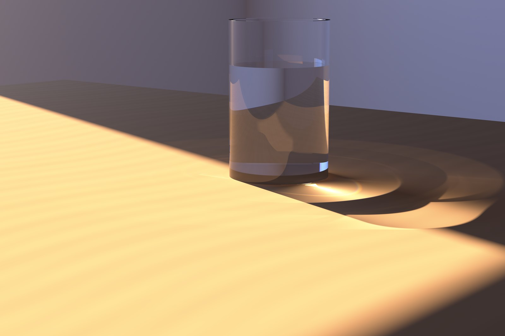
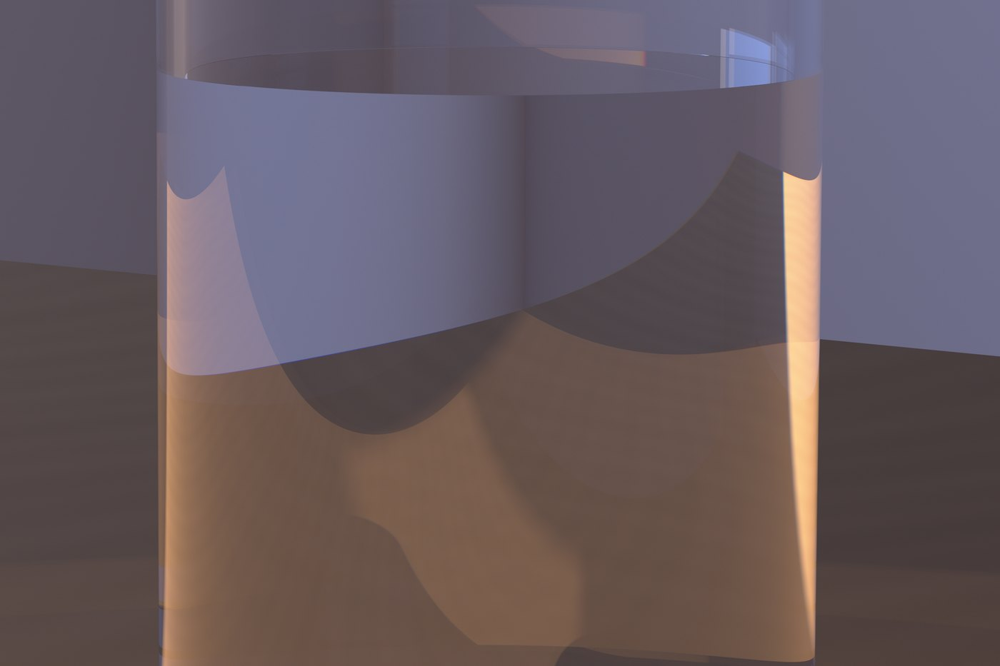
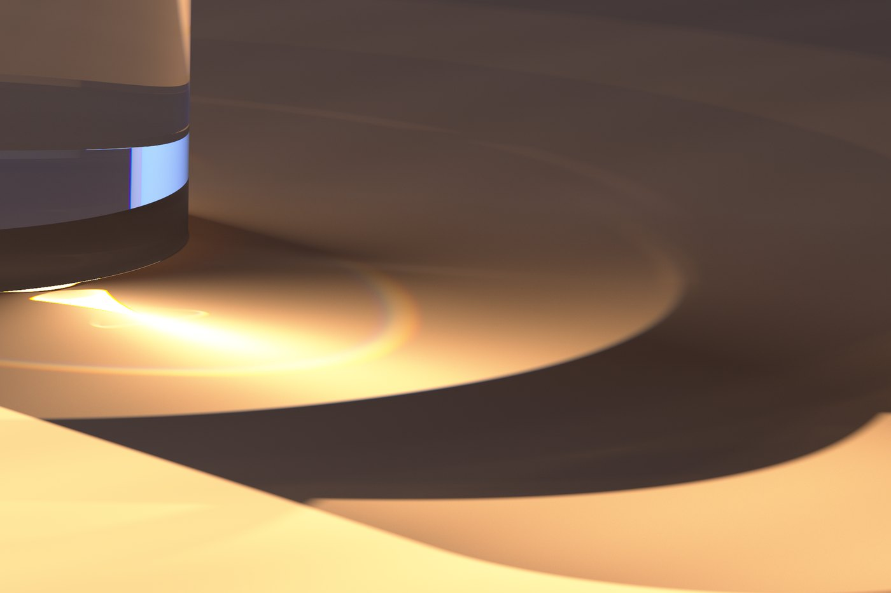
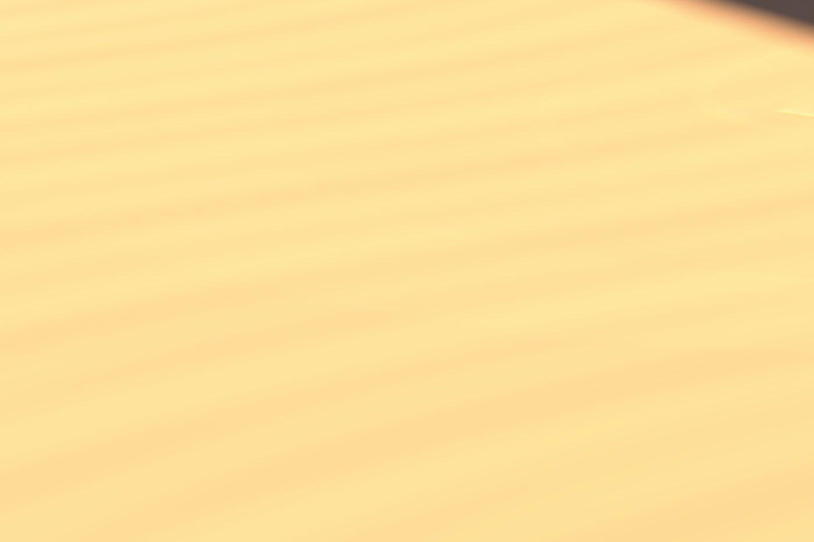

a photograph of a room that has never existed · day 14

drag through the exposure — noise becoming light



There is no 3D software here. The camera is ~700 lines of CUDA written today: a spectral path tracer in which every ray carries one wavelength of light, 380–780 nm. Color is never painted — it accumulates through the CIE 1931 standard observer, the same arithmetic your eye performs.
The bright pool inside the glass’s own shadow is the part worth looking at. That light never touched the room — it went through the water, was bent by it, and arrived focused. Those photons were traced from the sun: through the window, twice through the glass, then connected straight into the camera — an unbiased light-tracing pass married to the eye-side path tracer, each owning half the light so nothing is counted twice.
Water here has water’s real refractive index at every wavelength (Cauchy dispersion, n(589) = 1.3333), so violet bends harder than red. It shows up as thin coloured fringes on the rim and base, and as a pale arc of spectrum where the caustic folds — a small, honest amount of colour, which is what a glass of water actually does. The dramatic sentence about rainbows was written before the render existed, and deleted after.
Before the shutter opened, the two halves were made to photograph the same test scene independently. They agreed to 0.01%. Then the exposure ran on an RTX 4090 — tens of thousands of samples per pixel, ~1011 photons — while the checkpoints you can scrub above were saved as it converged.
kernel.cu · scene.py · tracer.py — in the day14 folder of the playground. The film of the exposure developing is on YouTube (and a 45-second Short).